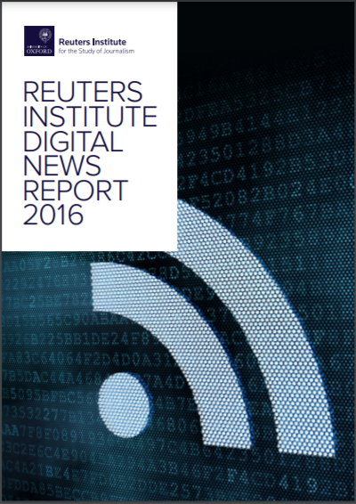
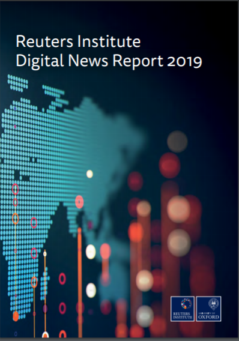
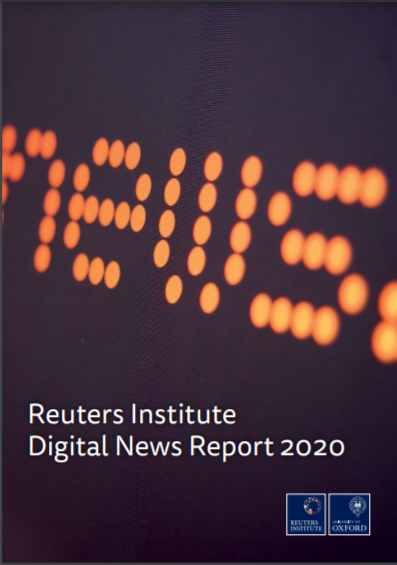

Za udeležence
Za izvajalce
Trainees Edition
Trainers Edition
MODUL 7: SVETOVNI TRENDI PORABE NOVIC
Opis modula
Glavni namen tega modula je predstaviti pregled svetovnih trendov porabe novic, da bi razvili razumevanje stališč, navad in naklonjenosti njihovega občinstva, njihovega zavedanja o vprašanjih, povezanih z novicami, spreminjajočega se okolja novic v različnih državah, času, kulturi in demografskih značilnostih.
Sekundarni cilj je usmerjati izvajalce usposabljanja, ki želijo vsebino tega modula uporabiti pri usposabljanju svojih udeležencev. Razumevanje trendov ''uživanja'' novic pomaga tudi pri izbiri najučinkovitejših sredstev za boj proti napačnim informacijam/dezinformacijam ter pri oblikovanju najprimernejših vsebin (ki obravnavajo ranljive točke) za učne načrte za opismenjevanje na področju novic.
S temi cilji so v tem modulu zajeti prednostni viri novic, prednostne točke dostopa, zaupanje v novičarske medije, kanali napačnih informacij in pomisleki glede njih, preference glede oblike, vpliv novičarske pismenosti skupaj s smernicami o tem, kako poučevati predmet.
Udeleženci, ki bodo uspešno zaključili ta modul, bodo znali:
- prikazati razumevanje svetovnih trendov v porabi novic
- razumeti stališča, navade in naklonjenosti občinstva, ki spremlja novice
- razumeti, kako se občinstvo zaveda vprašanj, povezanih z novicami, in kako ga ta vprašanja skrbijo
- razumevanje spreminjajočega se okolja, povezanega z novicami, v različnih državah, času, kulturi in demografskih značilnostih.
Poleg tega bodo izvajalci usposabljanja, ki bodo uspešno zaključili ta modul, lahko pokazali razumevanje potrebe po spremembi učnih vsebin glede na značilnosti ciljnih skupin in smernice za usposabljanje na to temo.
Struktura modula
Ta modul je sestavljen iz naslednjih delov:
- Opis modula (cilji, opis vsebine in učni rezultati)
- Struktura modula
- Smernice za udeležence
- Smernice za izvajalce usposabljanja (kako se pripraviti, metode za uporabo in nasveti za izvajalce usposabljanja)
- Vsebina (študijsko gradivo in vaje)
- Kviz
- Viri (reference in priporočeni viri ter videoposnetki)
Glavni cilji modula, opis vsebine in učni rezultati so pojasnjeni v delu Opis modula. Vsebina vključuje vsa študijska gradiva in vaje, povezane z vsebino. Kviz vključuje vprašanja z več izbirami, s katerimi lahko udeleženci usposabljanja preverijo svoj napredek. Gradiva imajo dve komponenti: reference in priporočena gradiva za nadaljnji študij. Reference so seznam virov, navedenih v vsebinskem delu. Priporočeni viri so sestavljeni iz seznama dodatnih virov in videoposnetkov, ki jih je zelo priporočljivo prebrati in pogledati za nadaljnje učenje o temi. Smernice za udeležence izobraževanja vključujejo navodila in predloge za udeležence izobraževanja. Smernice za izvajalce usposabljanja vodijo izvajalce usposabljanja skozi različne faze usposabljanja in vsebujejo nasvete, ki bi lahko bili koristni pri poučevanju teme.
Smernice za udeležence usposabljanja
Od udeležencev izobraževanja se pričakuje, da bodo prebrali besedilo, si ogledali priporočene videoposnetke in rešili vaje. Za dodatne informacije lahko poiščejo predlagane vire. Po končanem študiju vsebine učencem priporočamo, da o rešijo kviz za oceno svojega napredka. Po potrebi lahko ponovno pregledajo študijsko gradivo.
Smernice za izvajalce usposabljanja
Smernice za izobraževalce vključujejo predloge in nasvete o tem, kako predstaviti vsebino tega modula odraslim.
Priprava
Priporočamo pripravo predstavitve (PowerPoint/Prezi/Canva), obogatene z grafi in dejanskimi podatki (dokazi). Predlagamo tudi predstavitev podatkov za posamezne države skupaj z globalnimi podatki.
Ta del vsebine je treba pogosto posodabljati. Zato pridobite najnovejše letno poročilo agencije Reuters ter po potrebi dodajajte in spreminjajte. Če je vaša država vključena v Reutersovo raziskavo, v svoje predstavitve vključite podrobnosti za posamezno državo. Če vaša država ni vključena v Reutersov vzorec, poskusite pridobiti ugotovitve raziskave iz drugih virov.
Kako začeti
Na začetku lahko uporabite kratek kviz (3 do 5 vprašanj) v programu Kahoot ali vprašanja z Mentimetrom, da udeležence pritegnete k temi. Uporablja se lahko kot motivacijsko orodje in kot orodje za preverjanje obstoječega znanja in ozaveščenosti udeležencev o temi.
Učne metode
Med usposabljanjem se lahko kombinirajo različne učne metode. Na primer:
- predavanje
- diskusija
- delo v skupinah
- samorefleksija
Nasveti za izobraževalca
Ogrevanje
Učinkovit način vključevanja udeležencev in določanja skupnih pričakovanj o tem, kaj se bodo naučili, je postaviti nekaj predhodnih vprašanj o temi. Udeležence lahko na primer vprašate, kakšne so spremembe v njihovem vedenju glede novic v zadnjem desetletju.
Po razpravah se prepričajte, da so udeleženci usposabljanja sposobni razumeti, da se novičarsko okolje spreminja v različnih državah, času, kulturi in glede na demografske značilnosti.
Predstavitev učnih ciljev
Jasno je treba opredeliti cilj učne ure (to je razviti razumevanje stališč, navad, skrbi, ozaveščenosti in preferenc občinstva ter spreminjajočega se okolja novic v različnih državah, času, kulturi in demografskih okoljih). Po ogrevalnih vprašanjih bo lažje pojasniti cilje.
Predstavitev učnih vsebin
Med predstavljanjem vsebine poskrbite za interakcijo z udeleženci in jih spodbujajte k aktivnemu sodelovanju.
- Preden predstavite pregled svetovnih trendov na področju porabe novic, udeležence prosite, da jih podrobneje predstavijo.
- Preden podate pregled spreminjajočega se okolja v zvezi z novicami v različnih državah, času, kulturi in demografskih okoljih, udeležence prosite, da ga podrobneje predstavijo.
- Pri prikazu globalnih podatkov navedite tudi podatke za posamezne države in jih primerjajte.
- Po končanem celovitem pregledu globalnih trendov v okolju novic udeležence vprašajte, kako pomembno je to znanje za razvoj učnih načrtov za opismenjevanje na področju novic.
Zaključek
Naredite kratek povzetek učne ure in postavite nekaj vprašanj, ki poudarjajo najpomembnejša sporočila, ki ste jih nameravali podati.
- Udeležence usposabljanja vprašajte, ali zavedanje o spremembah na področju novic poveča njihovo ozaveščenost o vprašanjih, povezanih z novicami.
Po razpravi se prepričajte, da udeleženci razumejo, da obstajajo številne spremembe in dejavniki (čas, države in demografske značilnosti), ki vplivajo na vedenje posameznikov pri uživanju novic, kar so dragocene informacije za usmerjeno usposabljanje.
Vsebina: Svetovni trendi porabe novic
Uvod
Znanje o odnosu, navadah in vedenju občinstva novic je pomembno za razumevanje spreminjajočega se okolja novic, razlik med državami in demografskimi značilnostmi (kot je starost). To razumevanje pomaga pri izbiri najučinkovitejših sredstev za boj proti napačnim/dezinformacijam ter pri oblikovanju najustreznejših vsebin (ki obravnavajo ranljive točke) za učne načrte za opismenjevanje na področju novic.
Reutersov inštitut za preučevanje novinarstva na Univerzi v Oxfordu od leta 2012 objavlja letna poročila o tem, kako se novice porabljajo v različnih državah. Ta poročila so pripravljena na podlagi anket, ki jih opravi na tisoče posameznikov v več deset državah iz različnih celin (npr. leta 2016 približno 50.000 ljudi iz 26 držav, leta 2018 več kot 74.000 ljudi iz 37 držav, leta 2020 več kot 80.000 ljudi iz 40 držav).
Gre za najobsežnejšo tekočo primerjalno študijo o porabi novic na svetu. Evropa ostaja v središču pozornosti, vendar so v Reutersovih poročilih zajete tudi države iz Azije, Latinske Amerike, Afrike in Severne Amerike. Glavne ugotovitve poročil iz zadnjih petih let so povzete tukaj.
Veliko podatkov v poročilu za leto 2020 je bilo zbranih, preden je virus COVID-19 prizadel številne države, vključene v raziskavo, zato poročilo za leto 2020 v veliki meri predstavlja posnetek trendov pred pandemijo. Da pa bi dobili občutek, kaj se je spremenilo, so bili ključni deli raziskave v začetku aprila 2020 (po izbruhu pandemije) ponovljeni v šestih državah (Združeno kraljestvo, ZDA, Nemčija, Španija, Južna Koreja in Argentina). Ugotovitve po izbruhu pandemije bodo po potrebi obravnavane posebej.
Viri novic
Med letoma 2012 in 2017 je v večini držav opazen stalen vzorec glede virov, ki jih ljudje uporabljajo za novice, pri čemer so najpogosteje dostopne televizijske novice (približno 70 % leta 2016) in spletne novice (približno 75 % leta 2016), medtem ko se je branje tiskanih časopisov znatno zmanjšalo (s približno 40 % na 25 % leta 2016). Največja sprememba je bila rast števila novic, do katerih se dostopa prek družbenih medijev, kot so Facebook, Twitter in Instagram (Newman, Fletcher, Kalogeropoulos, Levy in Nielsen, 2016, str. 8; 2017, str. 10). Odstotek ljudi, ki pravijo, da uporabljajo družbene medije kot vir novic, se je v ZDA povečal na 46 % (od leta 2013 do 2016 se je skoraj podvojil), v Evropi pa so med državami opazne razlike (na primer v Združenem kraljestvu 35 % in Nemčiji 31 %). V celotnem vzorcu iz 26 držav je leta 2016 vsaj eden od desetih (12 %) dejal, da so družbeni mediji njegov glavni vir novic, še višje številke pa so v Avstraliji (18 %) in Grčiji (27 %) (Newman, Fletcher, Kalogeropoulos, Levy in Nielsen, 2016, str. 7-8).

Podatki kažejo, da so med generacijami precejšnje razlike v virih, ki jih uporabljajo za novice. V vseh državah mlajše skupine veliko pogosteje uporabljajo družbene medije in digitalne medije kot glavni vir novic, medtem ko se starejše skupine držijo navad, s katerimi so odraščale (televizija, radio in tisk; najpomembnejše so televizijske novice). Tretjina oseb v starosti od 18 do 24 let (33 %) pravi (leta 2017), da so družbeni mediji njihov glavni vir novic – to je več kot spletne strani z novicami (31 %) in več kot televizijske novice in tiskani časopisi skupaj (29 %) (Newman, Fletcher, Kalogeropoulos, Levy in Nielsen, 2017, str. 7, 10).
Televizija tudi v letu 2018 za mnoge ostaja ključni vir novic, medtem ko aplikacije za novice, elektronske novice in mobilna obvestila še naprej pridobivajo na pomenu (Newman, Fletcher, Kalogeropoulos, Levy & Nielsen, 2018, str. 9). Najnovejša ocena podatkov agencije Reuters za zadnjih devet let pa je pokazala, da so spletne novice prehitele televizijo kot najpogosteje uporabljen vir novic v številnih državah, vključenih v raziskavo. Tiskani časopisi so še naprej upadali, medtem ko so se družbeni mediji po strmem porastu izenačili (Newman, Fletcher, Kalogeropoulos, Levy in Nielsen, 2020, str. 11).
Uporaba družbenih medijev za novice je v številnih državah po letih nenehne rasti začela upadati. Leta 2018 se je v številnih državah rast ustavila ali pa se je obrnila v nasprotno smer. Če za primer vzamemo ZDA, je tedenska uporaba družbenih medijev za novice stalno naraščala od 27 % leta 2013 do največ 51 % leta 2017, nato pa je leta 2018 znatno upadla na 45 % (-6 %). V Združenem kraljestvu se je uporaba povečala z 20 % leta 2013 na 41 % leta 2017, nato pa se je leta 2018 zmanjšala na 39 %. Zdi se, da se je upad v Braziliji začel leta 2016, vendar uporaba še vedno presega 65 % (Newman, Fletcher, Kalogeropoulos, Levy in Nielsen, 2018, str. 9-10).
V letu 2019 so ljudje v številnih državah začeli manj časa preživljati s Facebookom in več časa z aplikacijama WhatsApp in Instagram kot v prejšnjih letih. Vendar pa Facebook še vedno ostaja daleč najpomembnejše družbeno omrežje za novice. Opazen je porast uporabe aplikacij za sporočanje novic, saj potrošniki iščejo bolj zasebne prostore za komuniciranje. Aplikacija WhatsApp je postala glavno omrežje za razpravljanje in izmenjavo novic v nezahodnih državah, kot so Brazilija (53 %), Malezija (50 %) in Južna Afrika (49 %). Javne in zasebne skupine na Facebooku, ki razpravljajo o novicah in politiki, so postale priljubljene v Turčiji (29 %) in Braziliji (22 %), vendar se veliko manj uporabljajo v zahodnih državah, kot sta Kanada (7 %) ali Avstralija (7 %) (Newman, Fletcher, Kalogeropoulos, Levy in Nielsen, 2019, str. 9).
Vir: Pixnio
Hitro rast uporabe aplikacij za sporočanje novic spodbujata predvsem dva dejavnika. Prvi je, da so se omrežja ljudi na Facebooku sčasoma tako razširila, da jim ni več udobno odkrito deliti vsebine in so razpravo preselili v aplikacije za sporočanje, kjer so lahko prepričani, da govorijo z ožjim krogom prijateljev. Drugi je, da so se aplikacije za šifrirano sporočanje, kot je WhatsApp, izkazale za razmeroma varen prostor za svobodno izražanje (npr. političnih stališč). To je pomemben dejavnik zlasti v avtoritarnih državah, kot so Turčija, Malezija in Hongkong. Ugotovitve Reutersove raziskave kažejo na močno povezavo med uporabo omrežij, kot je WhatsApp, in samoizraženo zaskrbljenostjo glede varnosti objavljanja političnih sporočil (Newman, Fletcher, Kalogeropoulos, Levy in Nielsen, 2018, str. 12-13).
Medijske navade so se med zaprtjem zaradi COVID-19 bistveno spremenile. Raziskava manjšega obsega, ki je bila izvedena le v šestih državah pred in po začetku pandemije (januarja in aprila 2020), je pokazala, da se je več ljudi obrnilo na televizijske novice v živo (tedenska poraba televizijskih novic se je v vseh šestih državah v povprečju povečala za 5 %) in na zaupanja vredne spletne vire novic. Bistveno pa se je povečala tudi poraba družbenih medijev (+5), saj je več ljudi uporabljalo ta omrežja za iskanje in izmenjavo novic v kombinaciji s televizijo in spletnimi stranmi. Poleg tega so zaprtja tudi pospešile uporabo novih digitalnih orodij, saj se je veliko ljudi prvič pridružilo spletnim skupinam ali sodelovalo v videokonferencah (Newman, Fletcher, Kalogeropoulos, Levy in Nielsen, 2020, str. 10-13).
Prednostne dostopne točke (portali in posredniki) do novic
Velika večina anketirancev raziskave Reuter 2018 (65 %) raje pride do novic prek stranskih poti, kot da bi šla neposredno na spletno stran ali aplikacijo z novicami. Več kot polovica (53 %) do novic raje dostopa prek iskalnikov, družbenih medijev ali zbirnikov novic, torej vmesnikov, ki za izbor zgodb uporabljajo algoritme za razvrščanje in ne vmesnikov, ki jih vodijo ljudje/uredniki (Newman, Fletcher, Kalogeropoulos, Levy in Nielsen, 2018, str. 13).
Pri povprečjih med državami so bile ugotovljene zelo pomembne razlike. Dve tretjini vprašanih na Finskem (65 %) in Norveškem (62 %) raje neposredno preide na spletno stran ali aplikacijo. Po drugi strani pa je najpogosteje zaželen dostop prek družbenih medijev, in sicer za več kot štiri od desetih uporabnikov v Čilu (43 %), Bolgariji (42 %) in Maleziji (40 %). V nekaterih azijskih državah so glavna vrata zbirniki ali iskanje. V Južni Koreji jih kar 47 % pravi, da najraje dostopajo prek iskalnika, 30 % prek zbirnikov novic, le 5 % pa jih raje obišče neposredno spletno stran ali aplikacijo z novicami. Na Japonskem, kjer je glavni novičarski portal Yahoo!, je ta delež le 15 %. Te razlike v priljubljenih dostopnih točkah so ključnega pomena. Kažejo, da nordijski založniki še vedno ohranjajo neposredne odnose s svojimi bralci. Po drugi strani pa so korejski in japonski založniki pri dostopu do občinstva veliko bolj odvisni od platform tretjih oseb (Newman, Fletcher, Kalogeropoulos, Levy in Nielsen, 2018, str. 14).
Vir: Wikimedia Commons
Kar zadeva točke dostopa do spletnih novic, se bodo navade v letu 2020 še naprej porazdeljevale, saj vse več ljudi uporablja različne digitalne platforme, ki so jih sprva najbolj intenzivno uporabljali mlajši ljudje. V vseh državah nekaj več kot četrtina (28 %) svoje potovanje po novicah najraje začne s spletnim mestom ali aplikacijo, sledijo družbeni mediji (26 %). Osebe, stare od 18 do 24 let (t. i. generacija Z), imajo še šibkejšo neposredno povezavo z novičarskimi blagovnimi znamkami (16 %), skoraj dvakrat pogosteje pa do novic raje dostopajo prek družbenih medijev (38 %). V vseh starostnih skupinah se je uporaba Instagrama za novice od leta 2018 podvojila (Newman, Fletcher, Kalogeropoulos, Levy in Nielsen, 2020, str. 23).
Kot kažejo ugotovitve, več ljudi odkriva novice prek algoritmov kot prek urednikov. Več kot polovica udeležencev raziskave (54 %) je leta 2017 raje kot urednike ali novinarje (44 %) izbrala poti, ki za izbor zgodb uporabljajo algoritme. Ta učinek je še bolj očiten pri tistih, ki večinoma uporabljajo pametne telefone (58 %), in pri mlajših uporabnikih (64 %) (Newman, Fletcher, Kalogeropoulos, Levy in Nielsen, 2017, str. 23).
Po eni strani se veliko ljudi za spletne novice obrača na družbena omrežja in zbirnike novic. Zbirniki dajejo prednost tako zaradi hitrosti posodabljanja kot tudi zaradi priročnosti pri združevanju več virov na enem mestu, družabnim omrežjem pa dajejo prednost zaradi interaktivnosti. Po drugi strani pa anketiranci povsod izražajo določeno zaskrbljenost zaradi morebitnega negativnega vpliva algoritmov, pri čemer so Norvežani in Britanci med tistimi, ki se najbolj bojijo, da bi se ključne informacije ali izzivalna stališča lahko izgubila v filtrirnem mehurčku, ki ga poganjajo algoritmi (Newman, Fletcher, Kalogeropoulos, Levy in Nielsen, 2016, str. 11-12).
Izogibanje novicam in preobremenjenost z njimi
Polarizacija, napačne/dezinformacije in nizko zaupanje niso edini problemi, s katerimi se danes sooča novičarska industrija. Prav tako se srečujemo s težavami izogibanja novicam in preobremenjenosti z novicami. Reutersovi podatki iz raziskave iz leta 2019 razkrivajo, da se skoraj tretjina (32 %) udeležencev aktivno izogiba novicam. V primerjavi s podatki iz leta 2017 se je izogibanje na splošno povečalo za 3 odstotne točke, v Združenem kraljestvu pa za 11 odstotnih točk, in sicer zaradi dolgočasja, jeze ali žalosti zaradi Brexita. Ljudje pravijo, da se novicam izogibajo, ker negativno vplivajo na njihovo razpoloženje (58 %), ker se počutijo nemočne, da bi spremenili dogodke, ali pa zato, ker se ne morejo zanesti, da so novice resnične. Najbolj se novicam izogibajo na Hrvaškem (56 %), v Turčiji (55 %) in Grčiji (54 %). Najnižji odstotek takšnih, ki se novicam izogibajo, je na Japonskem (11 %), kjer branje novic pogosto razumejo kot dolžnost (Newman, Fletcher, Kalogeropoulos, Levy in Nielsen, 2019, str. 10, 26; 2017, str. 9).
Podobno se približno tretjina udeležencev (28 %) strinja, da je danes preveč novic in da je zaradi nenehnega posodabljanja novic in različnih pogledov težko vedeti, kaj se v resnici dogaja. Pogosta pritožba je, da so uporabniki bombardirani z več različicami iste zgodbe ali istega opozorila. Preveč je nasprotujočih si in zmedenih novic. Preobremenjenost je najbolj zaznana v ZDA (40 %). Nižja je v državah z manjšim številom izdajateljev, kot sta Danska (20 %) in Češka (16 %) (Newman, Fletcher, Kalogeropoulos, Levy in Nielsen, 2019, str. 26).
Dokazi, da se nekateri ljudje izogibajo novicam ali so izčrpani zaradi količine novic, so povod za nove pobude, kot so počasne novice in konstruktivno novinarstvo ter pojasnjevalno novinarstvo (Newman, Fletcher, Kalogeropoulos, Levy & Nielsen, 2019, str. 27).
Deljenje novic
Družbena omrežja spodbujajo ne le odkrivanje, temveč tudi razpravljanje in deljenje novic. Približno četrtina uporabnikov internetnih novic (24 %) v povprečnem tednu deli novice prek družbenih omrežij; to so ljudje, ki jih podrobno zanimajo teme, kot so politika, poslovanje, tehnologija ali okolje (Newman, Fletcher, Kalogeropoulos, Levy in Nielsen, 2016, str. 10).
Večina ljudi deli pretežno novice, ki jih odobrava (Finska, Avstralija in ZDA), kar posledično lahko vpliva na količino pozitivnih novic, ki so jim ljudje izpostavljeni. Nasprotno pa so uporabniki, ki novice delijo, v Združenem kraljestvu običajno bolj bojeviti ali cinični in sorazmerno pogosteje delijo stvari, ki jim niso všeč (Newman, Fletcher, Kalogeropoulos, Levy in Nielsen, 2016, str. 10).
Preference za objektivne novice v primerjavi z delnimi novicami
Reutersova raziskava za leto 2020 je pokazala, da ima večina (60 %) raje novice brez posebnega stališča in le manjšina (28 %) raje novice, ki delijo ali krepijo njihova stališča. To ni presenetljivo glede na tradicionalna pričakovanja, da morajo novinarji pripravljati nevtralne in nepristranske novice, vendar so razlike med državami presenetljive. Prednost nevtralnim novicam dajejo v največjem številu v Nemčiji, na Japonskem, v Združenem kraljestvu in na Danskem – v vseh državah z močnimi in neodvisnimi javnimi radiotelevizijami. Prednost bolj pristranskim novicam je najmočnejša v Španiji, Franciji, Italiji in v ZDA (Newman, Fletcher, Kalogeropoulos, Levy in Nielsen, 2020, str. 15).
V ZDA, kjer so tako politika kot mediji v zadnjih letih postali vse bolj pristranski, Reutersovi raziskovalci vendarle ugotavljajo povečanje (za šest odstotnih točk od leta 2013 do leta 2020) deleža ljudi, ki pravijo, da imajo raje novice, ki se strinjajo z njihovim stališčem. Nasprotno pa se je v Združenem kraljestvu delež tistih, ki dajejo prednost novicam, ki delijo njihovo stališče, sčasoma zmanjšal za šest odstotnih točk. Podatki raziskave kažejo tudi, da je v vseh državah manj verjetno, da bodo mladi dajali prednost novicam brez stališča (Newman, Fletcher, Kalogeropoulos, Levy in Nielsen, 2020, str. 16-17).
V resnici večina ljudi rada kombinira novice, ki jim lahko zaupa, z različnimi mnenji, ki izpodbijajo ali podpirajo njihova obstoječa stališča. Reutersova raziskava za leto 2020 pa razkriva, da tiste s skrajnimi političnimi stališči objektivne novice privlačijo bistveno manj (Newman, Fletcher, Kalogeropoulos, Levy & Nielsen, 2020, str. 17).
Zaupanje v medije
V vseh državah manj kot polovica udeležencev raziskave Reuters 2018 (44 %) pravi, da večinoma zaupajo medijem, vendar je bolj verjetno, da zaupajo medijem, ki jih sami večinoma uporabljajo (51 %). Nasprotno pa le tretjina vzorca pravi, da večino časa zaupajo novicam, ki jih najdejo v iskalnikih (34 %), medtem ko novice v družbenih medijih veljajo za še bolj nezanesljive (23 %). Če pogledamo podrobnejše podatke iz leta 2018 o splošnem zaupanju v novice, opazimo več gibanja in precejšnje razlike med državami. Finska se skupaj s Portugalsko drži na vrhu (obe 62 %). Grčija (26 %) in Južna Koreja (25 %) ostajata zasidrani na dnu, čeprav se je njuna ocena povečala za 2 odstotni točki. Zaupanje v novice se je znatno povečalo v številnih državah, zlasti na Irskem, v Kanadi, na Nizozemskem in Slovaškem. Zdi se, da je upadanje zaupanja pogosto povezano s političnimi napetostmi. V Španiji se je zaupanje po katalonskem referendumu zmanjšalo za 7 odstotnih točk (44 %). Zmanjšalo se je tudi v Avstriji (-4) po seriji volitev, ki so povzročale razhajanja, in na Poljskem (-5), kjer je bila vlada obtožena, da v imenu boja proti "lažnim novicam" omejuje zasebne medije (Newman, Fletcher, Kalogeropoulos, Levy in Nielsen, 2018, str. 16).
Reutersova raziskava razkriva tudi najbolj in najmanj zaupanja vredne blagovne znamke v 37 državah. Ugotovitve kažejo, da se najbolj zaupa blagovnim znamkam z radijskim ozadjem in dolgo dediščino, najmanj pa digitalno rojenim blagovnim znamkam (Newman, Fletcher, Kalogeropoulos, Levy & Nielsen, 2018, str. 9).
Leta 2019 se je v vseh državah povprečna raven zaupanja v novice na splošno znižala za 2 odstotni točki na 42 %, manj kot polovica (49 %) pa se strinja, da zaupa medijem, ki jih sami uporabljajo. V Franciji se je raven zaupanja po medijskem poročanju o gibanju rumenih jopičev znižala na 24 % (-11). Zaupanje v novice, ki jih najdejo prek iskalnika (33 %), in družbene medije ostaja stabilno, vendar izjemno nizko (23 %) (Newman, Fletcher, Kalogeropoulos, Levy in Nielsen, 2019, str. 9).
Zdi se, da se je zaupanje v novičarske medije tudi v letu 2020 globalno še naprej zmanjševalo. V raziskavi agencije Reuters za leto 2020 v vseh državah so manj kot štirje od desetih (38 %) odgovorili, da večino časa zaupajo novicam, kar je za štiri odstotne točke manj kot leta 2019. Manj kot polovica (46 %) jih je dejala, da zaupajo novicam, ki jih uporabljajo sami (Newman, Fletcher, Kalogeropoulos, Levy in Nielsen, 2020, str. 9). Opazne so precejšnje razlike med državami, od Finske in Portugalske, kjer več kot polovica (56 %) pravi, da večinoma zaupa novicam, do manj kot četrtine na Tajvanu (24 %), v Franciji (23 %) in Južni Koreji (21 %). Le v šestih državah v letu 2020 je stopnja zaupanja višja od 50 %. Pomembne spremembe v zadnjih 12 mesecih vključujejo padec zaupanja v Hongkongu (-16), Čilu (-15), Združenem kraljestvu (-12), Mehiki (-11), na Danskem (-11), v Bolgariji (-7), Kanadi (-8) in Avstraliji (-6), kjer je Reutersova raziskava sovpadala z ostrimi razpravami o ravnanju z najhujšimi požari avstralskega grmovja v zgodovini. Zato se zdi, da razdeljene družbe manj zaupajo medijem, ne nujno zato, ker je novinarstvo slabše, ampak ker so ljudje na splošno nezadovoljni z institucijami v svojih državah in morda zato, ker novičarske hiše prenašajo več mnenj, s katerimi se ljudje ne strinjajo (Newman, Fletcher, Kalogeropoulos, Levy in Nielsen, 2020, str. 14).
Kar zadeva zaupanje v informacije o koronavirusu, so nacionalne novičarske organizacije dosegle razmeroma dobre rezultate, za zdravniki in zdravstvenimi organizacijami, vendar pred posameznimi politiki in običajnimi ljudmi. Približno na vrhuncu zaprtja je bilo zaupanje v novičarske organizacije v zvezi s COVID-19 več kot dvakrat večje od zaupanja v družbene medije, video strani in aplikacije za sporočanje, kjer približno štirje od desetih menijo, da informacije niso vredne zaupanja (Newman, Fletcher, Kalogeropoulos, Levy in Nielsen, 2020, str. 12).
Pomisleki glede napačnih informacij in dezinformacij
Več kot polovica vzorca globalne raziskave Reuters 2018 (54 %) izraža pomisleke ali močno zaskrbljenost glede tega, "kaj je resnično in kaj lažno", ko razmišlja o spletnih novicah. Razlike med posameznimi državami so precejšnje, pri čemer so na vrhu Brazilija (85 %), Španija (69 %), Francija (62 %) in ZDA (64 %). Vse te države so polarizirane in v njih so na nedavne ali tekoče volilne ali referendumske kampanje vplivale dezinformacije in napačne informacije. Nasprotno je veliko manj zaskrbljenosti v Nemčiji (37 %) in na Nizozemskem (30 %), kjer je politika običajno manj polarizirana in imajo družbeni mediji manj pomembno vlogo kot vir novic (Newman, Fletcher, Kalogeropoulos, Levy in Nielsen, 2018, str. 18).
Globalna zaskrbljenost zaradi napačnih/dezinformacij ostaja visoka tudi v letih 2019 in 2020. Še preden je izbruhnila kriza s koronavirusom, je leta 2020 več kot polovica Reutersovega globalnega vzorca (56 %) izjavila, da so zaskrbljeni glede verodostojnosti novic. Skrb je običajno največja v Braziliji (84 %), Keniji (76 %) in Južnoafriški republiki (72 %), kjer je uporaba družbenih medijev visoka, tradicionalne institucije pa so pogosto šibkejše. Najmanjša zaskrbljenost je na Nizozemskem, v Nemčiji in na Danskem. Največje povečanje zaskrbljenosti je bilo leta 2020 v Hongkongu (+6), saj se je nadaljeval konflikt med vlado in študentskimi protestniki, pa tudi na Finskem (+4), kjer je bila nadpovprečna zaskrbljenost zaradi lažnih in zavajajočih informacij tujih vlad (Newman, Fletcher, Kalogeropoulos, Levy in Nielsen, 2020, str. 17).
Kanali napačnih informacij
Ljudje menijo, da so družbeni mediji največji vir zaskrbljenosti zaradi napačnih informacij (40 %), precej pred novičarskimi spletišči (20 %), aplikacijami za sporočanje, kot je WhatsApp (14 %), in iskalniki, kot je Google (10 %) (Newman, Fletcher, Kalogeropoulos, Levy in Nielsen, 2020, str. 19).
Če podatke še bolj razčlenimo, v vseh državah 29 % vprašanih pravi, da jih najbolj skrbi Facebook, sledita YouTube (6 %) in Twitter (5 %). V Braziliji ljudje pravijo, da jih bolj skrbijo zaprte aplikacije za sporočanje, kot je WhatsApp (35 %). Enako velja za Čile, Mehiko, Malezijo in Singapur. To je še posebej zaskrbljujoče, ker so lažne informacije običajno manj vidne in se jim je v teh zasebnih in šifriranih omrežjih težje zoperstaviti. Na Filipinih (47 %) in v ZDA (35 %) je največja zaskrbljenost zaradi Facebooka, druga omrežja pa imajo manjšo vlogo. Na Japonskem je največja težava Twitter, v Južni Koreji pa YouTube. Facebook se v obeh državah uporablja veliko manj pogosto. Zaradi teh pomislekov so številne platforme, vključno s Facebookom, Twitterjem in YouTubom, umaknile napačne informacije, ki so kršile smernice (Newman, Fletcher, Kalogeropoulos, Levy in Nielsen, 2020, str. 19-20).
Kriza s koronavirusom je ljudi opomnila, da se ta omrežja lahko uporabljajo za širjenje vseh vrst škodljivih napačnih informacij, ne le o politiki. V Reutersovi raziskavi po korona virusu v omejenem številu držav so skoraj štirje od desetih (37 %) vprašanih dejali, da so naleteli na veliko napačnih informacij o COVID-19 v družbenih medijih, kot sta Facebook in Twitter, 32 % pa prek aplikacij za sporočanje, kot je WhatsApp (Newman, Fletcher, Kalogeropoulos, Levy in Nielsen, 2020, str. 19).
Odgovornost za urejanje vsebine
Večina anketirancev meni, da imajo največjo odgovornost za odpravo težav z lažnimi in nezanesljivimi novicami založniki (medijska podjetja in novinarji – 75 %) in platforme (kot sta Google in Facebook – 71 %). Tako menijo, ker se večina novic, nad katerimi se pritožujejo, nanaša na pristranske ali netočne novice iz osrednjih medijev in ne na novice, ki so v celoti izmišljene ali jih razširjajo drugi kanali (Newman, Fletcher, Kalogeropoulos, Levy in Nielsen, 2018, str. 9, 19).
Veliko bolj mešana je slika, ko gre za vladno posredovanje. Javnost je nekoliko naklonjena vladnemu posredovanju za ustavitev lažnih novic, zlasti v Evropi (60 %) in Aziji (63 %). Nasprotno pa le štirje od desetih Američanov (41 %) menijo, da bi morala vlada storiti več (Newman, Fletcher, Kalogeropoulos, Levy in Nielsen, 2018, str. 9).
Vrednotenje novičarskih medijev
V raziskavi agencije Reuters iz leta 2019 so bili anketiranci naprošeni, da ocenijo delovanje novičarskih medijev na petih področjih: ali menijo, da se novičarski mediji osredotočajo na prave teme, pomagajo razumeti aktualne dogodke, sproti obveščajo ljudi, uporabljajo pravi pozitivni/negativni ton ter dobro spremljajo in preverjajo vplivneže (Newman, Fletcher, Kalogeropoulos, Levy in Nielsen, 2019, str. 26).
Podatki razkrivajo, da za medije velja, da bolje opravljajo delo pri posredovanju novic kot pri njihovem pojasnjevanju. V vseh državah skoraj dve tretjini vprašanih meni, da mediji dobro obveščajo ljudi (62 %), manj dobro pa jim pomagajo razumeti novice (51 %). Manj kot polovica (42 %) jih meni, da mediji dobro opravljajo svojo vlogo nadzornika, tj. da od bogatih in vplivnih ljudi zahtevajo odgovornost. Glede teh lastnosti obstajajo zanimive razlike med državami. Novičarske organizacije v severnoevropskih državah, kot sta Finska (51 %) in Norveška (51 %), imajo običajno najboljši ugled pri iskanju odgovornosti bogatih in vplivnih ljudi. Nasprotno pa mediji v državah, kot so Južna Koreja (21 %), Madžarska (20 %) in Japonska (17 %), menijo, da v tem pogledu opravljajo slabo delo (Newman, Fletcher, Kalogeropoulos, Levy in Nielsen, 2019, str. 26).
Če pogledamo drugi dve dimenziji v raziskavi, le manjšina (25 %) meni, da izbrane teme niso pomembne za njihovo življenje. Zdi se, da je več težav s tonom, ki ga novinarji uporabljajo pri teh zgodbah. Štirje od desetih (39 %) menijo, da novičarski mediji na dogodke gledajo preveč negativno (Newman, Fletcher, Kalogeropoulos, Levy in Nielsen, 2019, str. 27).
Plačevanje spletnih novic in porast donacij: nov poslovni model
Čeprav je splet številnim založnikom omogočil, da dosežejo več ljudi kot kdaj koli prej, so poslovni modeli, povezani z digitalnimi tehnologijami, še vedno zelo zahtevni. Tradicionalna medijska podjetja odpuščajo zaposlene zaradi velikega zmanjšanja prihodkov od tiskanih publikacij in nenehnih težav pri pridobivanju denarja od spletnega občinstva. Medtem ko približno 45 % udeležencev raziskave vsaj enkrat na teden plača za tiskani časopis, je bilo bralce veliko težje prepričati, da plačajo za novice na spletu (Newman, Fletcher, Kalogeropoulos, Levy in Nielsen, 2016, str. 22-23).
Najbolj so bili prizadeti založniki, ki so odvisni od prihodkov digitalnega oglaševanja, ki so se zmanjšali zaradi (a) prehoda na manjše zaslone mobilnih naprav, (b) tržne moči Facebooka in Googla ter (c) porasta blokiranja oglasov. Po podatkih agencije Reuters iz leta 2016 je delež blokiranja oglasov med 10 % (Japonska) in 38 % (Poljska), pri čemer je ta delež precej višji med osebami, mlajšimi od 35 let. Približno tretjina udeležencev raziskave je izjavila, da namerava v naslednjem letu na svoje pametne telefone namestiti program za blokiranje oglasov. Ni enega samega razloga za blokiranje oglasov. Večinoma odraža nezadovoljstvo z obsegom in motečo naravo oglaševanja, na Nizozemskem in v Španiji pa se pojavljajo močni pomisleki glede zasebnosti (Newman, Fletcher, Kalogeropoulos, Levy in Nielsen, 2016, str. 22).
Ker so obstoječi modeli spletnega oglaševanja vse bolj okrnjeni, so se založniki ponovno osredotočili na alternativne oblike, kot so vsebine z blagovno znamko in sponzorirane vsebine. Sponzorirane vsebine in njihovo označevanje so še vedno nastajajoče področje, na katerem je veliko prostora za nejasnosti. Pri pregledu šestih držav, kjer je ta praksa najbolj razširjena, je bilo ugotovljeno, da so potrošniki najbolj zadovoljni v Kanadi in ZDA ter najbolj zadržani v Nemčiji in Koreji, kjer se le petina (21 %) strinja, da je označevanje dovolj jasno, tretjina (32 %) pa se s tem ne strinja (Newman, Fletcher, Kalogeropoulos, Levy in Nielsen, 2016, str. 22).
Medtem ko so prihodki od digitalnega oglaševanja ogroženi in sami po sebi ne zadostujejo za podporo visokokakovostnega novinarstva, se v celotni panogi pojavljajo prizadevanja, da bi potrošnike prepričali v neposredno plačevanje spletnih novic z naročnino, članarino, donacijami ali plačili na članek. Povprečno število ljudi, ki plačujejo za spletne novice, se je v letu 2018 v številnih državah povečalo, pri čemer je do znatnega povečanja prišlo na Norveškem (+4 odstotne točke), Švedskem (+6) in Finskem (+4). V vseh teh državah je majhno število založnikov, od katerih jih večina neusmiljeno uporablja različne strategije plačljivega dostopa. Njihova dodatna prednost je, da prihajajo iz bogatih družb, ki cenijo novice in imajo močno tradicijo naročnin, jezik in mali trg pa jih ščitita pred tujo konkurenco. V bolj zapletenih in razdrobljenih državah je še vedno veliko založnikov, ki spletne novice ponujajo brezplačno (Newman, Fletcher, Kalogeropoulos, Levy in Nielsen, 2018, str. 22, 9).
Razmah naročnin je sprožil zaskrbljenost zaradi dvostopenjskega sistema, v katerem so kakovostne novice rezervirane za tiste, ki si jih lahko privoščijo. Nekatere novičarske organizacije zato raje ohranjajo brezplačen dostop, vendar prosijo za prostovoljne prispevke. Ugotovitve kažejo, da novičarskim organizacijam trenutno daruje razmeroma malo ljudi – v Združenem kraljestvu in Nemčiji le 1 %, v Španiji 2 %, v ZDA pa 3 %. Vendar bi bila lahko priložnost veliko večja. V povprečju je četrtina (22 %) vprašanih v raziskavi Reuters 2018 dejala, da bi bila v prihodnosti pripravljena prispevati novičarski organizaciji, če bi menila, da ne more pokriti svojih stroškov na drug način. V kvalitativnih odgovorih se zdi, da donacije naletijo na tiste, ki jih skrbijo "lažne novice" in neodvisnost medijev (Newman, Fletcher, Kalogeropoulos, Levy in Nielsen, 2018, str. 23-25).
V letu 2019 je kljub prizadevanjem novičarske industrije opaziti le majhno povečanje števila tistih, ki plačujejo za spletne novice, bodisi z naročnino, članarino ali donacijo. Rast je omejena na peščico držav, predvsem v nordijski regiji (Norveška 34 %, Švedska 27 %), medtem ko število plačnikov v ZDA (16 %) po velikem skoku leta 2017 ostaja stabilno. Tudi v državah z višjimi stopnjami plačevanja ima velika večina le eno spletno naročnino. Spodbuden pa je podatek, da je večina plačil zdaj "trajnih" in ne enkratnih. V nekaterih državah se morda pojavlja tudi utrujenost od naročnin, saj večina svoj omejeni proračun raje porabi za zabavo (Netflix/Spotify) kot za novice (Newman, Fletcher, Kalogeropoulos, Levy in Nielsen, 2019, str. 9).
V letu 2020 se je plačilo za spletne novice znatno povečalo v številnih državah, med drugim v ZDA na 20 % (+4) in na Norveškem na 42 % (+8), v številnih drugih državah pa je bilo povečanje manjše. Pomembno je poudariti, da v vseh državah večina ljudi še vedno ne plačuje za spletne novice. Na splošno je za naročnike najpomembnejši dejavnik prepoznavnost in kakovost vsebine. Naročniki menijo, da dobivajo boljše informacije. Vendar je veliko ljudi povsem zadovoljnih z novicami, do katerih lahko dostopajo brezplačno, in zelo velik je delež tistih, ki niso naročniki (40 % v ZDA in 50 % v Združenem kraljestvu) in pravijo, da jih nič ne more prepričati, da bi plačali (Newman, Fletcher, Kalogeropoulos, Levy in Nielsen, 2020, str. 9).

Vpliv novic in medijske pismenosti
Leta 2018 so Reutersovi raziskovalci prvič merili medijsko pismenost in v svojem spletnem vzorcu ugotovili različne ravni medijske pismenosti. Tisti z višjo stopnjo medijske pismenosti dajejo prednost časopisnim znamkam pred televizijskimi, družbene medije za novice pa uporabljajo zelo drugače kot širša populacija. Prav tako so bolj previdni pri posegih vlad za odpravljanje napačnih informacij (Newman, Fletcher, Kalogeropoulos, Levy in Nielsen, 2018, str. 9).
Obstaja tudi jasna povezava med poznavanjem delovanja novičarske industrije in verjetnostjo, da bodo ljudje v prihodnosti plačali za novice. Ugotovitve Reutersove raziskave iz leta 2018 razkrivajo, da več kot dve tretjini anketirancev (68 %) bodisi ne pozna težav novičarske industrije bodisi verjame, da večina novičarskih organizacij z digitalnimi novicami ustvarja dobiček. V resnici večina digitalnih novic deluje z izgubo, ki jo subvencionirajo vlagatelji, alternativni viri prihodkov ali zgodovinski dobički iz oddajanja ali tiskanja. Tisti, ki so se zavedali, da digitalni časopisi ustvarjajo izgubo (10 % vzorca), bodo bolj verjetno plačali naročnino na novice ali dali donacijo (Newman, Fletcher, Kalogeropoulos, Levy in Nielsen, 2018, str. 24).
Eden od učinkov novic/medijske pismenosti je bila sprememba navad pri uporabi novic. Ena od pozitivnih ugotovitev raziskave Reuters 2019 je, da se je več kot četrtina (26 %) začela zanašati na "bolj ugledne" vire novic – v Braziliji je ta delež narasel na 36 %, v ZDA pa na 40 %. Nadaljnja četrtina (24 %) je dejala, da je prenehala uporabljati vire, ki imajo "manj natančen ugled", skoraj tretjina (29 %) pa se je odločila, da ne bo delila potencialno netočnega novinarskega članka. Zdi se, da se je vedenje najbolj spremenilo v državah, kjer je zaskrbljenost zaradi napačnih informacij največja. Skoraj dve tretjini (61 %) vprašanih v Braziliji je izjavilo, da se je odločilo, da ne bo delilo potencialno netočne zgodbe v družbenih medijih, in 40 % na Tajvanu se jih je za ne deljenje odločilo zaradi nedavnih volitev, ki so jih zaznamovale napačne informacije (Newman, Fletcher, Kalogeropoulos, Levy in Nielsen, 2019, str. 22).
Prednostna oblika novic (besedilo, podkast, video)
Reuters spremlja preference glede oblike vsebine od leta 2014. Ugotovitve iz leta 2018 kažejo, da se v veliki meri raje odločajo za branje kot za gledanje. ZDA so se najbolj približale videu, saj jih 12 % pravi, da novice večinoma uživajo v videu (+2), vendar tudi tam 62 % pravi, da novice večinoma raje spremljajo v besedilu. Na Finskem je ta delež 86 %. Sčasoma je prišlo do nekaterih sprememb (zlasti v ZDA in Španiji), vendar so bile te skromne glede na večjo izpostavljenost videu prek družbenih medijev. Ugotovitve razkrivajo razkorak med različnimi državami in kulturami. Vse azijske države (vključno z Japonsko) se nagibajo k želji po več videoposnetkih spletnih novic, vendar še vedno dve tretjini anketirancev v azijskih državah pravi, da imajo raje besedilo. V ZDA in severnoevropskih državah se odločno zavzemajo za manjše število spletnih videoposnetkov. Starost se ne zdi pomemben dejavnik (Newman, Fletcher, Kalogeropoulos, Levy in Nielsen, 2018, str. 28).
Pri porabi video novic so v letu 2020 opazne zanimive regionalne razlike. V Keniji (93 %), na Filipinih (89 %) in v Hongkongu (89 %) devet od desetih spletnih prebivalcev pravi, da tedensko dostopajo do spletnih video novic, v severnoevropskih državah, kot so Nemčija (43 %), Danska (41 %) in Združeno kraljestvo (39 %), pa je takih uporabnikov le približno polovica. V vseh državah več kot polovica (52 %) uporabnikov vsak teden dostopa do video novic prek platform tretjih oseb, kot so YouTube, Facebook in Twitter, tretjina (33 %) pa prek spletnih strani in aplikacij za novice. Vendar so med državami spet zelo velike razlike. V Hongkongu tri četrtine (76 %) uporabnikov dostopa do video novic prek platform tretjih oseb, v Združenem kraljestvu pa je ta delež manj kot četrtina (23 %) (Newman, Fletcher, Kalogeropoulos, Levy in Nielsen, 2020, str. 28).
Podkasti postajajo priljubljeni po vsem svetu zaradi boljše vsebine in lažje distribucije. Nove zvočne naprave omogočajo lažje odkrivanje, možnosti oglaševanja in sponzoriranja pa so vedno večje. Mladi veliko pogosteje uporabljajo podcaste kot pa poslušajo radijske oddaje. Na splošno tretjina vseh udeleženih v raziskavi iz leta 2018 (34 %) posluša podkaste vsaj enkrat mesečno, vendar obstajajo velike razlike med državami. Podkasti so dvakrat bolj priljubljeni na Irskem (38 %) kot v Združenem kraljestvu (18 %). Ena od teorij pravi, da so podkasti običajno najbolj uspešni v državah, kot sta ZDA (33 %) in Avstralija (33 %), kjer ljudje veliko časa preživijo v avtomobilih. Manjša uporaba na Nizozemskem (18 %) je morda povezana s krajšimi razdaljami na delo in večjim številom potovanj s kolesom. Vendar to ne more biti popolna razlaga. Pomembni dejavniki so tudi zvestoba radiu, raven ponudbe in obseg promocije. Mlajši od 35 let poslušajo dvakrat več podkastov kot starejši od 45 let. To ni presenetljivo glede na to, da gre za generacijo, ki je sprejela pametne telefone in storitve na zahtevo, kot sta Netflix in Spotify. Starejše skupine še vedno pogosteje poslušajo radio (Newman, Fletcher, Kalogeropoulos, Levy in Nielsen, 2018, str. 10, 29).
Delež uporabnikov podkastov se je leta 2020 znatno povečal, čeprav so ukrepi zaradi korona virusa morda začasno obrnili ta trend. V vseh državah polovica vseh anketirancev (50 %) pravi, da podkasti zagotavljajo večjo globino in razumevanje kot druge vrste medijev. Približno polovica uporabnikov podkastov posluša novičarski podkast v ZDA, kjer se je trg najbolj razvil. Uporabniki podkastov v ZDA pravijo, da ta oblika omogoča večjo poglobljenost in razumevanje zapletenih vprašanj (59 %) ter širši razpon pogledov (57 %) kot druge vrste medijev. Novičarski podkasti so najbolj priljubljeni med osebami v starosti od 25 do 34 let (mladi milenijci) (Newman, Fletcher, Kalogeropoulos, Levy in Nielsen, 2020, str. 9, 25-26).

Uporaba pametnih telefonov in novih naprav za novice
Pomen pametnih telefonov – in odvisnost ljudi od njih – ne kaže znakov upočasnjevanja. V povprečju 62 % anketirancev iz vzorca iz leta 2018 pravi, da tedensko uporabljajo pametni telefon za novice (+6), kar je le malo za prenosnim ali stacionarnim računalnikom s 64 %. V večini držav se je doseg pametnih telefonov za novice v šestih letih podvojil (Newman, Fletcher, Kalogeropoulos, Levy in Nielsen, 2018, str. 27).
V letu 2019 se pomen pametnega telefona za novice še naprej povečuje, saj dve tretjini (66 %) uporabnikov uporablja to napravo za dostop do novic tedensko (+4). Mobilni zbiralniki novic, kot sta Apple News in Upday, postajajo vse pomembnejša sila. Apple News v ZDA zdaj doseže več uporabnikov iPhonov (27 %) kot Washington Post (23 %) (Newman, Fletcher, Kalogeropoulos, Levy in Nielsen, 2019, str. 10).
Odvisnost od pametnih telefonov se še naprej povečuje. Leta 2020 sta več kot dve tretjini (69 %) ljudi tedensko uporabljali pametni telefon za novice, te naprave pa spodbujajo rast krajših video vsebin prek platform tretjih oseb ter zvočnih vsebin, kot so podcasti. Tisti, ki uporabljajo pametne telefone kot glavno napravo za novice, bistveno pogosteje dostopajo do novic prek družbenih omrežij. Uporaba je pogosto največja v delih svetovnega juga, kot sta Kenija (83 %) in Južna Afrika (82 %), kjer je fiksni internet običajno manj razširjen. Dostop je najmanjši v Kanadi (55 %), na Japonskem (52 %) in v večjem delu vzhodne Evrope, čeprav je tudi tu pametni telefon postal – ali je na poti, da postane – glavna platforma za dostop do novic (Newman, Fletcher, Kalogeropoulos, Levy in Nielsen, 2020, str. 29).
V vseh državah skoraj polovica (48 %) uporablja dve ali več naprav za dostop do novic vsak teden, v primerjavi z 39 % leta 2014. Stacionarni računalniki in prenosni računalniki so za mnoge še vedno pomembni, vendar udobje in vsestranskost pametnega telefona še naprej zmagujeta. V Združenem kraljestvu je pametni telefon leta 2017 prehitel računalnik in ga zdaj uporabljata približno dve tretjini udeležencev raziskave. Tablični računalniki so glede uporabe za novice nespremenjeni (26 %), pri čemer majhna skupina starejših in premožnejših uporabnikov še naprej ceni večje zaslone (Newman, Fletcher, Kalogeropoulos, Levy in Nielsen, 2020, str. 30).
Ti trendi so pomembni, saj krajša pozornost občinstva in manjši mobilni zasloni vplivajo na vrsto ustvarjenih novičarskih vsebin. Slike in videoposnetke je treba preoblikovati z uporabo navpičnih razmerij stranic in jih pogosto opremiti z besedilom, da delujejo v mobilnem kontekstu (Newman, Fletcher, Kalogeropoulos, Levy & Nielsen, 2018, str. 27).
Kviz
Reference
Newman, N., Fletcher, R., Kalogeropoulos, A., Levy, D.A.L. & Nielsen, R. K. (2016). Reuters Institute Digital News Report 2016. Reuters Institute for the Study of Journalism.
Newman, N., Fletcher, R., Kalogeropoulos, A., Levy, D.A.L. & Nielsen, R. K. (2017). Reuters Institute Digital News Report 2017. Reuters Institute for the Study of Journalism.
Newman, N., Fletcher, R., Kalogeropoulos, A., Levy, D.A.L. & Nielsen, R. K. (2018). Reuters Institute Digital News Report 2018. Reuters Institute for the Study of Journalism.
Newman, N., Fletcher, R., Kalogeropoulos, A., Levy, D.A.L. & Nielsen, R. K. (2019). Reuters Institute Digital News Report 2019. Reuters Institute for the Study of Journalism.
Newman, N., Fletcher, R., Kalogeropoulos, A., Levy, D.A.L. & Nielsen, R. K. (2020). Reuters Institute Digital News Report 2018. Reuters Institute for the Study of Journalism.
Priporočeni viri
Newman, N., Fletcher, R., Kalogeropoulos, A., Levy, D.A.L. & Nielsen, R. K. (2016). Reuters Institute Digital News Report 2016. Reuters Institute for the Study of Journalism.
Newman, N., Fletcher, R., Kalogeropoulos, A., Levy, D.A.L. & Nielsen, R. K. (2017). Reuters Institute Digital News Report 2017. Reuters Institute for the Study of Journalism.
Newman, N., Fletcher, R., Kalogeropoulos, A., Levy, D.A.L. & Nielsen, R. K. (2018). Reuters Institute Digital News Report 2018. Reuters Institute for the Study of Journalism.
Newman, N., Fletcher, R., Kalogeropoulos, A., Levy, D.A.L. & Nielsen, R. K. (2019). Reuters Institute Digital News Report 2019. Reuters Institute for the Study of Journalism.
Newman, N., Fletcher, R., Kalogeropoulos, A., Levy, D.A.L. & Nielsen, R. K. (2020). Reuters Institute Digital News Report 2018. Reuters Institute for the Study of Journalism.
Priporočeni videoposnetki
Reuters Institute for the Study of Journalism. (2021). Digital News Report 2021.
Reuters Institute for the Study of Journalism. (2020). Digital News Report 2020.
Reuters Institute for the Study of Journalism. (2019). Digital News Report 2019.
Reuters Institute for the Study of Journalism. (2018). Digital News Report 2018.
Reuters Institute for the Study of Journalism. (2017). Digital News Report 2017.
Reuters Institute for the Study of Journalism. (2016). Digital News Report 2016.